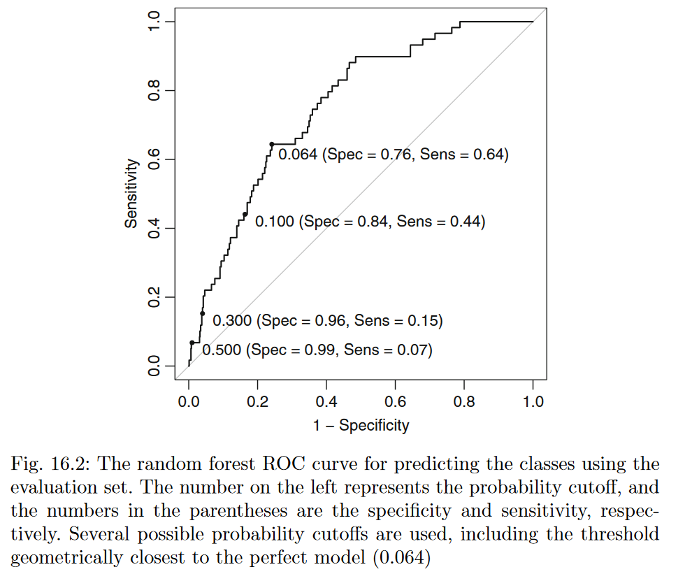

8 Remedies for suboptimal data
8.1 Class Imbalance
An imbalance occurs when one or more classes have very low proportions in the training data as compared to the other classes.
- Online advertising: Ad clicked or not (2.4%)
- Pharmaceutical research: Molecules with activity (vwry few) or not
- Insurance claims: Fraud (only 22%) or not fraud
- Spam detection: Spam or not spam
- Selling buisness: Buy (6%) or not buy
8.1.1 The Effect of Class Imbalance
The models achieve good specificity (since almost every customer is predicted no insurance) but have poor sensitivity (Figure).

The imbalance also had a severe effect on the predicted class probabilities. (e.g., In the random forest model, for example, 82 % of the customers have a predicted probability of having insurance of 10 % or less. This highly left-skewed predicted probability distribution also occurs for the other two models. This means that the models are not very confident in predicting that most customers have insurance; they tend to assign low probabilities of having insurance to a significant portion of the customers.)
Imbalance cause that lift charts and ROC curves have similar patterns
8.1.2 Strategies for overcoming class imbalances
8.1.2.1 Hyperparameters selection
- Model tuning strategy: tune the model to maximize the accuracy or sensitivity of the minority class(es)
8.1.2.2 Post-processing techniques (use model outputs)
Alternate probability Cutoffs to improve the prediction accuracy of the minority class samples (i.e., post-processing the model predictions to redefine the class predictions). The most straightforward approach is to use the ROC curve since it calculates the sensitivity and specificity across a continuum of cutoffs. Using this curve, an appropriate balance between sensitivity and specificity can be determined.
- Several techniques exist for determining a new cutoff:
- First, if there is a particular target that must be met for the sensitivity or specificity, this point can be found on the ROC curve and the corresponding cutoff can be determined.
- Another approach is to find the point on the ROC curve that is closest (i.e., the shortest distance) to the perfect model (with 100 % sensitivity and 100 % specificity), which is associated with the upper left corner of the plot. In Figure, a cutoff value of 0.064 would be the closest to the perfect model.
- The cutoff associated with the largest value of the Youden index (measures the proportion of correctly predicted samples for both the event and nonevent groups / can be computed for each cutoff that is used to create the ROC curve): show superior performance relative to the default 50 % value. For the random forest ROC curve, the cutoff that maximizes the Youden index (0.021) is similar to the point closest to the optimal model.
- Several techniques exist for determining a new cutoff:

NOTE: In our analysis, the alternate cutoff for the model was not derived from the training or test sets. It is important, especially for small samples sizes, to use an independent data (small evaluation set used for developing post-processing techniques ~ 10% ≠ training set used to tune model) set to derive the cutoff. If the training set predictions are used, there is likely a large optimistic bias in the class probabilities that will lead to inaccurate assessments of the sensitivity and specificity. If the test set is used, it is no longer an unbiased source to judge model performance.
- Adjusting Prior Probabilities: For models that use prior probabilities naiıve Bayes and discriminant analysis classifiers. Unless specified manually, these models typically derive the value of the priors from the training data. Weiss and Provost (2001a) suggest that priors that reflect the natural class imbalance will materially bias predictions to the majority class. Using more balanced priors or a balanced training set may help deal with a class imbalance. (e.g., when classes are 6 % and 94 % for the insured and uninsured it is better to use 60 % for the insured and 40 % for the uninsured). This strategy did not change the model (same ROC) but allows for different trade-offs between sensitivity and specificity.
8.1.2.3 Alter training data prior to model training
Adjust Sampling Methods: Non of them is a clear winner, it depends of the case study
- priori sampling approach: select a training set sample to have roughly equal event rates during the initial data collection. However, the test set should be sampled to be more consistent with the state of nature and should reflect the imbalance so that honest estimates of future performance can be computed.
- post hoc sampling approach:
- up-sampling:
- adding random samples with replacement from minority classes)
- down-sampling:
- randomly sample the majority classes so that all classes have approximately the same size
- bootstrap sample across all cases such that the classes are balanced in the bootstrap set (advatange of bootstrap is that we can obtain the estimate of variation about the down-sampling)
- SMOTE: adds new/synthetic samples to the minority class and down-sample cases from the majority class via random sampling
NOTE: Adjusting sampling can bias model performance (e.g., up-sampling: the same sample can be use to predict and tune model)
8.1.2.4 Alter model training process (model parameters are being modified)
Unequal Case Weights: Many of the predictive models for classification (boosting trees which apply different case weights at each iteration) have the ability to use case weights where each individual data point can be given more emphasis in the model training phase. Increase the weights for the samples in the minority classes
Cost-Sensitive Training: Some models (SVM, CART trees, C5.0 trees) can alternatively optimize a cost or loss function that differentially weights specific types of errors of specific classes (it can cause that class probabilities cannot be generated and ROC cannot be use). For example, it may be appropriate to believe that misclassifying true events (false negatives) is X times as costly as incorrectly predicting nonevents (false positives). Correctly classify class A is more importante than correctly classify class B
8.2 Big sample size
An increase in the number of samples can have less positive consequences:
- Computational burdens as the number of samples (and predictors) grows
- There are diminishing returns on adding more of the same data from the same population. Since models stabilize with a sufficiently large number of samples, garnering more samples is less likely to change the model fit.